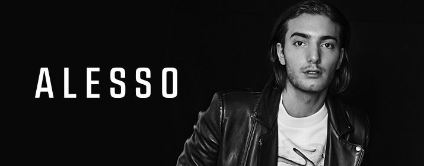

Mainstage: 22:00-23:00!
Alesso ist ein schwedischer DJ, Produzent und Remixer im Bereich House und Progressive.
Seine erste Produktion veröffentlichte Alesso 2010 mit den Songs Think It's Time, Workaholic,
Moma und Loose It. Schließlich wurde er von Sebastian Ingrossos Label Refune Records unter Vertrag
genommen. Besonders erfolgreich war Nillionaire. Seinen Durchbruch hatte Alesso 2011 mit seinem Remix des Liedes Pressure der pakistanischen Sängerin
Nadia Ali. Pressure wurde vielfach von bekannten DJs wie Armin van Buuren, Tiësto, Kaskade, Calvin
Harris und der Swedish House Mafia gespielt. Der Remix gewann ebenfalls den International Dance Music
Award als Best Progressive Track . 2012 folgte der nächste Hit Calling (Lose My Mind) in Zusammenarbeit mit Sebastian Ingrosso und dem OneRepublic
Frontman Ryan Tedder. Daraufhin veröffentlichte Alesso weitere Vocaltracks, wie Years mit Matthew Koma und City of Dreams mit Dirty South.
Im Frühjahr 2013 erschien sein Remix des Liedes If I Lose Myself von OneRepublic und er verhalf dem Lied wieder auf hohe Chartplatzierungen.
Gemeinsam mit dem britischen Dance-Pop-Duos Hurts und Calvin Harris produzierte er 2013 den Song Under Control. Der
Track verschaffte ihm hohe Chart-Platzierungen in sämtlichen europäischen Ländern.
Im Herbst 2014 kooperierte er mit der schwedischen Sängerin Tove Lo, woraus der Track Heroes entstand.